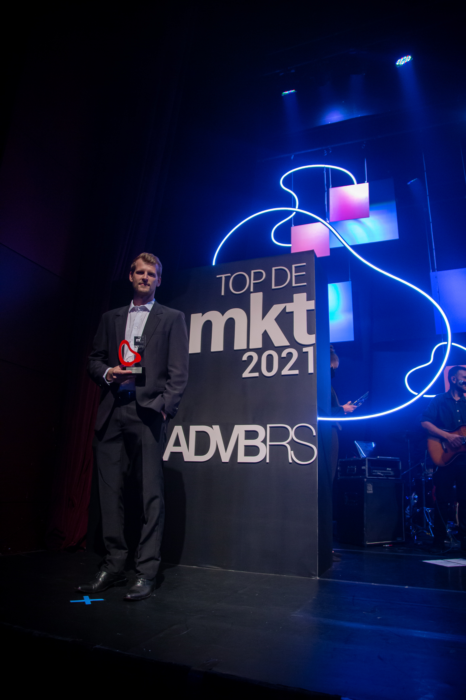

O isolamento social como janela de oportunidade
Em 2020, o mundo parou. Com o isolamento social, o interesse por jardinagem e o conceito "Urban Jungle" atingiu níveis históricos — milhões de brasileiros em casa descobriram (ou redescobriram) o prazer de cultivar plantas.
Como Diretor de Novos Negócios na BRA Digital, identifiquei junto à STIHL que era hora de ir além da venda de máquinas: o momento pedia que a marca ocupasse o papel de educadora. O desafio que levei ao cliente era criar uma conexão profunda com um público que estava em casa, entregando valor real e conhecimento técnico — não publicidade.
"O consumidor não quer um catálogo de produtos. Ele quer saber como usar, quando usar e por que aquela ferramenta vai transformar o espaço dele."
Um ecossistema de Inbound Marketing disfarçado de escola
Junto ao cliente e ao time da BRA, desenhamos o Pró-Jardim como um ecossistema de Inbound Marketing onde o conhecimento gerava autoridade e a conclusão dos cursos oferecia benefícios comerciais — fechando o ciclo de venda de forma consultiva e não intrusiva.
A proposta que levamos à STIHL não era um repositório de vídeos. Era uma plataforma estruturada em quatro módulos progressivos, acompanhando a jornada do usuário do básico ao profissional:
Da capacitação à venda: o funil pós-digital
- Topo do funil: Conteúdo educativo gratuito captava o público de jardinagem em casa
- Meio do funil: Módulos progressivos criavam autoridade da STIHL e engajamento profundo
- Fundo do funil: Conclusão dos cursos desbloqueava cupons de desconto em produtos STIHL
- Pós-venda: Comunidade de alunos gerava retenção e boca a boca qualificado
- Dado de mercado: STIHL se consolida como marca mais lembrada e preferida do segmento (Marcas de Quem Decide)
Top de Marketing ADVB-RS 2021 — três categorias estratégicas

O que o Pró-Jardim provou sobre a era pós-digital
Para mim e para o time da BRA, o Pró-Jardim foi a validação de uma visão que defendíamos juntos: a tecnologia não serve para criar mais anúncios — serve para criar conexões humanas e oportunidades de negócio reais.
O que construímos com a STIHL demonstrou que o investimento em educação e experiência do usuário é o caminho mais curto para a fidelização. Quando a marca genuinamente ensina algo útil, o consumidor não percebe o momento em que se torna cliente — porque já confia.